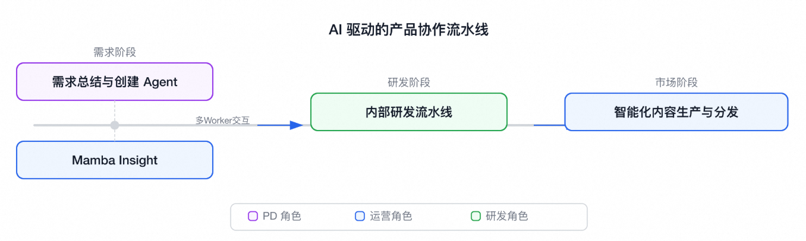
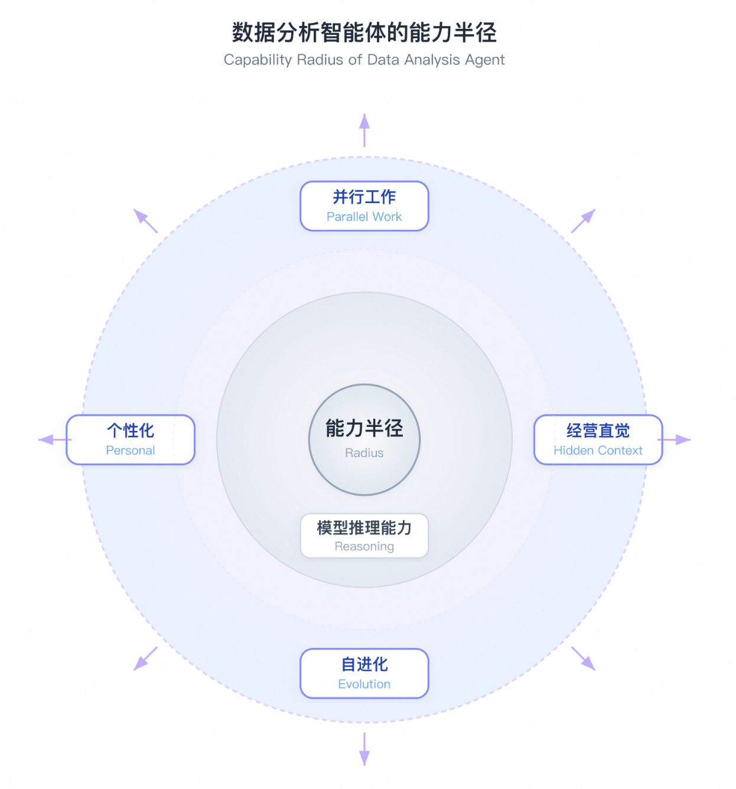
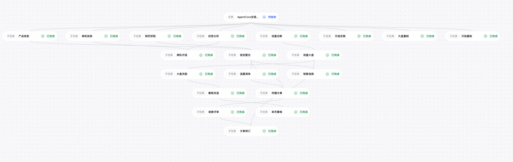
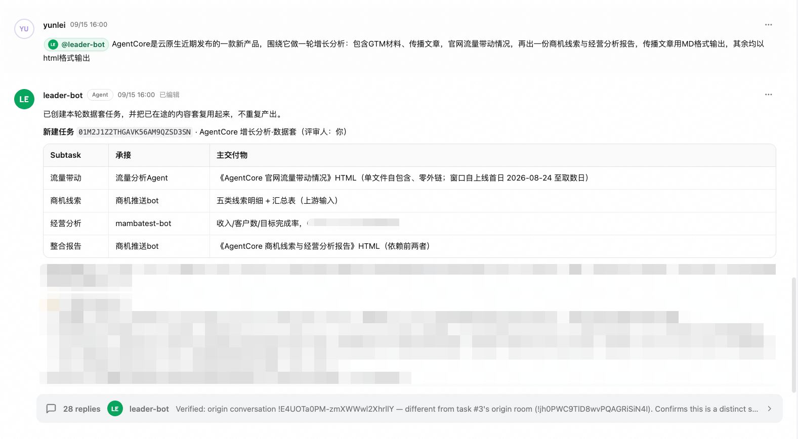

运营分析 Data Agent 实践¶
AI Native 的讨论越来越热，岗位边界在模糊，各个角色反而能以行业专家的身份史无前例地深度参与实践。我们团队探索的，是产品运营怎么把 AI 用进经营协作里。本篇讲的就是其中一个落地产物——数据分析智能体 Mamba Insight，从思路到实践的完整过程。
运营的日常诉求很分散，横跨多个数据域：大盘监控要盯每天 TOP 客户、售卖分析看分地域的成交表现、留存分析追问上月流失、增长洞察判断客户潜力、经营复盘看整体盘面。过去只能靠运营每周手拼一版"最大公约数"周报——五个人看，谁都能看到点、又都觉得不够用；想深挖就自己提需求排队。数据分析始终是一条旁路，从没嵌进工作流，更没真正变成 team 的一员。
一、行业坐标与核心挑战¶
设想产研线里有一条"需求 → 研发 → 推广"的管线，横跨多个业务域：需求收集智能体（产品域）识别"此刻缺数据支撑做判断"；数据分析智能体（产品运营域）查客户画像、输出优先级建议；研发流水线 Agent（研发域）完成从开发到发布；内容生产 Agent（产品运营域）自动生成推广素材并分发。按阿姆达尔定律，整体被"没被加速的那一段"卡住——我们不想成为那一段，于是开始重构数据分析智能体，让它真正融入 Team。

我们的设计思路¶
实践中我们发现几个很强的作用力：
-
并行工作：智能体能否嵌入工作流跟人并行（人↔agent），以及智能体之间能否协作（worker↔worker）；在你晨会准备、双周报复盘、客户跟进时，它和它的团队已跑完大部分工作，同一时刻服务多个角色、多条链路，不串扰、不排队。
-
自进化：能否越用越聪明。"上月营收还差多少"这类问题不该每次从零回答，Agent 要把上次经验变成下次的肌肉记忆。
-
个性化：能否千人千面。架构师问的和运营问的不是同一个东西，同一指标在不同上下文里意味着不同动作。
-
经营直觉（Hidden Context）：能否听懂问题背后的业务语境。"流失率"用什么口径、什么周期、关联哪几张表——这些不在问题里，藏在提问者脑子里。
-

二、解决方案实践¶
两个平台工具，加一层自定的语义规范，搭起 Mamba Insight 的骨架：Qoder 做 Hidden Context 上下文提取与语义层定义、阿里云智能体构建和治理平台 AgentCore 提供企业级协作与治理。
2.1 Qoder：从 500 条需求里提取 Hidden Information¶
团队多年积累的知识资产有四类，共同构成 Agent 的燃料库：内部研发协同平台的历史需求单（业务口径的活档案）、内部 BI 看板（指标与维度的决策过程）、日常增长分析工作流（看大盘→拆结构→找归因→定动作→追效果）、全角色日常协作对话。产品运营在其中三位一体——知识供给方、场景定义者、效果验证人，最有可能让 Agent 进入"越用越聪明"的正循环。
通过 Qoder，我们把近一年 500+ 条数据需求逐条标注，获得了完整Context：业务语言（如"识别高潜力客户"背后是"线索获取→商机识别→商机触达→商业转化→收入跟踪"的完整链路）、操作模式（趋势/交叉/分位/分层等分析模板，Agent 不能只会写 SELECT）、数据关系（哪张表 join 哪张、口径冲突以谁为准，散落在 SQL 注释和群聊里）。
这些暗知识固化成两类资产：9 个结构化 Skill 文档（调度规则、Scheme、指标、维度、计算公式等，是"字典"）和45 组 QA 对（是主产物——Skill 告诉 Agent"流失率怎么算"，QA 对告诉它"有人问流失率时真正想问什么"）。每一份都遵循可版本、可审计、可灰度、可回滚四个工程化标尺，保证不过时。
2.2 业务语义层：知识用什么结构装¶
行业成熟做法是三层抽象：实体、维度、度量，对象拆得越正交，BI 拖拽越好用。**但我们的读者是大模型。**Agent 每从一个对象跳到下一个对象，就多一次出错机会。所以我们把三层语义压进数据集内部——实体、时间、维度、度量都以字段属性标在字段上，对象层只留数据集、指标、已验证问答三类。语义一个没丢，只换了承载形式，我们内部叫它 Agent-Native 语义层。
语义层里真正值钱的是几件底表看不出、填错也不报错、只会给你一个"落在合理量级上的错数"的事：指标能否相加、哪些过滤条件必须默认带上、两表关联是一对一还是一对多。它们在语义层里都是必填枚举字段——结构化了，Agent 才有遵守的依据。
2.3 Alibaba Cloud AgentCore：让智能体开始团队协作¶
四个作用力里，"自进化"和"个性化"是关键，而 AgentCore 天然带这两项能力：Worker 级长期记忆让 Agent 积累团队级经验与纠错，上次踩过的 join 坑这次不再来；会话级独立上下文让不同角色互不串扰，同一个 Agent 面对架构师和运营能给出不同粒度；Skill 审核流水线让团队级变更走版本管理、个人级调整即时生效。基于此，我们创建了第二代数据分析智能体 Mamba Insight。
单 Worker 跑稳后，AgentCore 的 Worker Team 机制让多个 Worker 通过结构化输入输出互相调用：回到"需求→研发→推广"管线，每个 Worker 只封装自己领域的专业能力，产品域不需要懂查数、研发域不需要懂写文章。同样的模式可复制到用研、营销、报告等场景——数据分析 Agent 作为底座被按需调用。


Mamba Insight 日常处理客户收入、商机画像、经营指标，对安全合规有硬要求，企业级治理是从 demo 走向生产的核心：基于零信任，Agent 不持有任何凭证，访问经 AI 网关集中管控，对接企业 SSO 与 RBAC；租户数据物理隔离、全程加密、敏感数据自动脱敏；Skill/MCP Server/模型/Worker 模板统一注册、安全审核、热加载。尤其值得一提的是可观测与审计之上生长出的数据 Loop：每次调用全链路可追溯、Token 用量精确归因，而每一轮问答都是一条带真实业务意图的样本——口径错了回流成语义层修正，意图偏了回流成新的已验证问答。使用→审计→优化→使用，这个环转起来后用得越多、语义资产越准，这才是 Agent 越用越聪明的实际来源。
关联云产品：数据存储与分析——日志服务 SLS；Agent 构建与协作——Alibaba Cloud AgentCore；Agent 评估与进化——AgentLoop。
三、落地场景与成效¶
云原生业务运营有一条反复执行的链路——看大盘、拆结构、找归因、定动作、追效果。Mamba Insight 要做的，是把前三步（看、拆、找）自动化并行化、后两步（定、追）辅助化，压缩从"想法"到"数据支撑"的时间。
3.1 目标：全流程提效 10X¶
目标只有一个：把运营从“想法”到“数据支撑”的周期端到端压短——商机洞察从周到天、商机分发从周到天、过程跟进与反馈周更、经营分析与复盘分钟级。运营动作本身沿客户全生命周期展开：新客获取、留存预警、上量扩展、经营复盘，Mamba 要覆盖的是这一整条链路，提效不押在某个单点，而在把链路端到端跑通。下面四类核心场景，正是按这条生命周期铺开的。
3.2 四类核心分析场景¶
（支持单聊、群聊、定时任务、自动写入钉钉文档）
| 场景 | 核心问题 | 建模逻辑 |
|---|---|---|
| 新客增长（Lead→Customer） | 新客从哪来、哪个产品拉新最高效 | 用户×产品×行为定义流量池，按渠道/画像做贡献归因 |
| 留存（Activation→Retention） | 谁在流失、前兆信号是什么 | "连续 N 月消耗下降/归零"为预警，叠加访问行为提前预警 |
| 上量（Expansion） | 谁有交叉/升舱潜力 | 已转化客户为正样本提取共性，反向匹配相似未转化客户 |
| 经营复盘（Review） | 本期节奏与目标达成是否健康 | 前三层结果汇聚为周报月报素材池，调用双周报 Skill 自动成稿 |
四、未来展望¶
从"能不能用自然语言查数"的想法，到覆盖云原生全产品、跑通从临时查询到定期报告的完整链路，中间踩过的坑比写出来的多。这是我们在真实业务中跑出的一套相对通用的路径，如果你的团队也在做类似的事，欢迎交流。